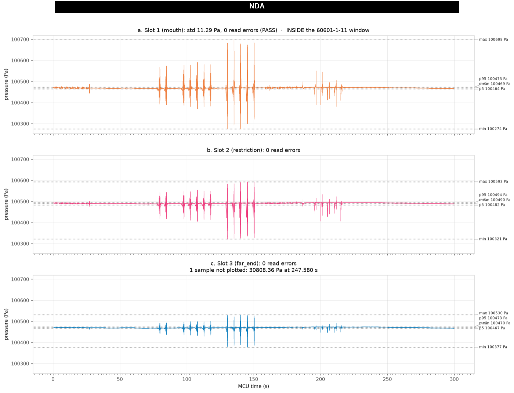

01 · Sensor Characterisation
Flow: Streaming a Capture
2026 · Application
Constraint: a radio link cannot carry every 100 Hz row. The board sends flow and volume over Bluetooth Low Energy at 50 Hz and keeps every row on the microSD card.
Constraint: a slow card write must never delay a sample. Rows wait in a ring buffer and a task on the second processor core writes them, while the firmware reports the lateness of every tick.
Takeaway: a Python decoder for each radio packet and a radio client
that records exactly what a phone receives.


8